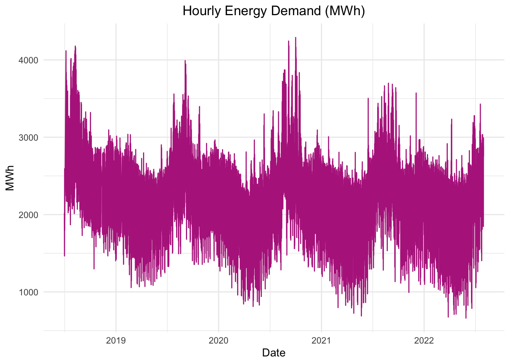
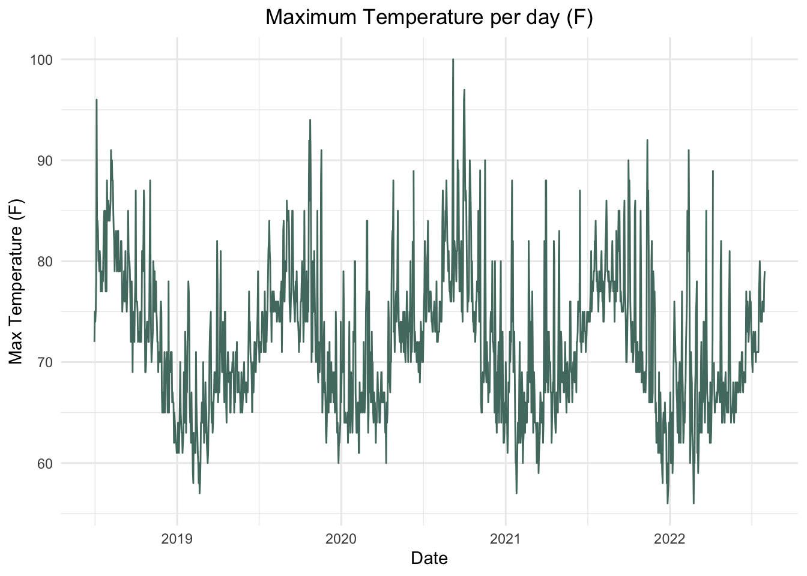
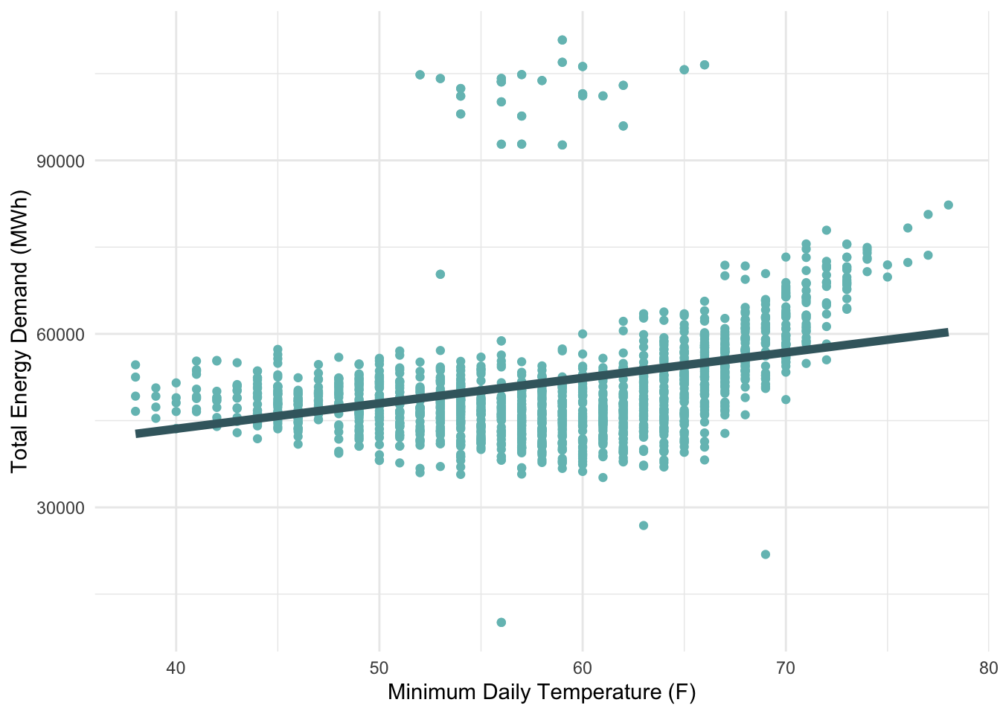
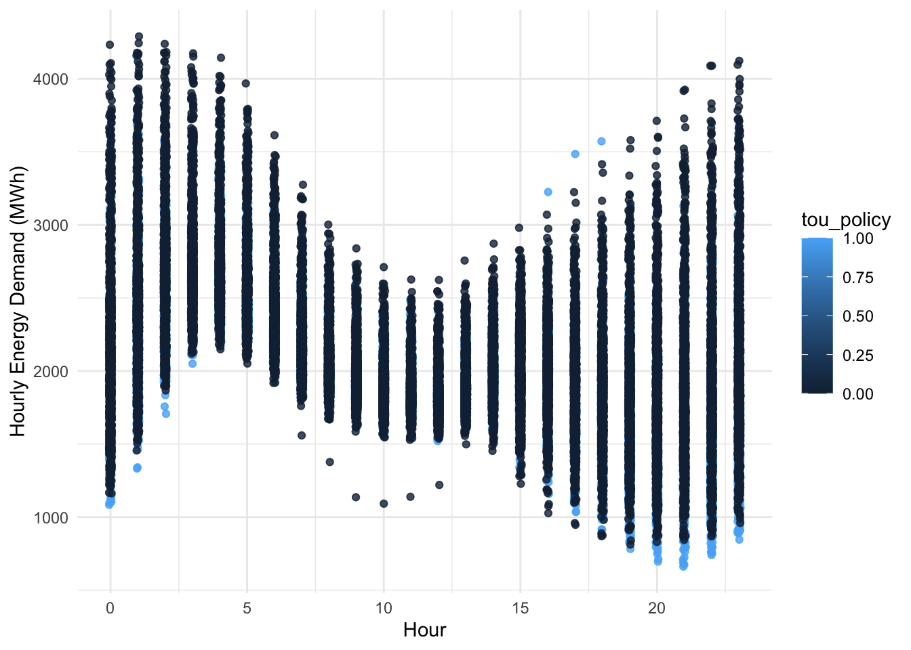
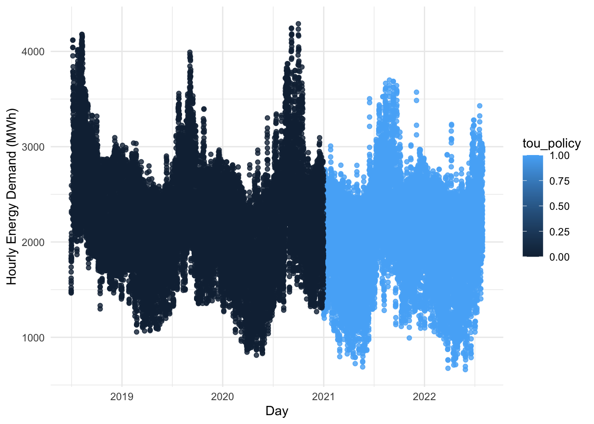

Attaching package: 'janitor'
The following objects are masked from 'package:stats':
chisq.test, fisher.test
library(lubridate)
Attaching package: 'lubridate'
The following objects are masked from 'package:base':
date, intersect, setdiff, union
library(broom)library(tsibble)
Attaching package: 'tsibble'
The following object is masked from 'package:lubridate':
interval
The following objects are masked from 'package:base':
intersect, setdiff, union
Loading the Energy Data
Hourly demand data https://www.eia.gov/opendata/browser/electricity/rto/region-sub-ba-data
# setting my root directoryrootdir <- ("/Users/colleenmccamy/Documents/MEDS/EDS_222_Stats/final_project")# reading in the dataeia_data_raw <-read_csv(paste0(rootdir, "/data/eia_data.csv"))
Warning: One or more parsing issues, see `problems()` for details
Rows: 35436 Columns: 6
── Column specification ────────────────────────────────────────────────────────
Delimiter: ","
chr (4): region, region_name, system_operator, stystem_operator_name
dbl (1): hourly_energy_mwh
dttm (1): date
ℹ Use `spec()` to retrieve the full column specification for this data.
ℹ Specify the column types or set `show_col_types = FALSE` to quiet this message.
# cleaning the data to be the two variables of interesteia_df <- eia_data_raw |>select(date, hourly_energy_mwh) |>na.omit()# creating a time series dataframeeia_ts <- eia_df |>as_tsibble()
Using `date` as index variable.
# exploring the data with a plotggplot(data = eia_df,aes(x = date, y = hourly_energy_mwh)) +geom_line(col ="#b52b8c") +labs(title ="Hourly Energy Demand (MWh)",x ="Date",y ="MWh") +theme_minimal() +theme(plot.title =element_text(hjust =0.5))

Loading the Temperature Data
temperature data: https://www.weather.gov/wrh/Climate?wfo=sgx
# loading in the temperature datatemp_data <-read_csv(paste0(rootdir, "/data/sd_temp_data.csv"))
Rows: 1522 Columns: 5
── Column specification ────────────────────────────────────────────────────────
Delimiter: ","
chr (4): Date, temp_max, temp_avg, temp_dept
dbl (1): temp_min
ℹ Use `spec()` to retrieve the full column specification for this data.
ℹ Specify the column types or set `show_col_types = FALSE` to quiet this message.
Warning in mask$eval_all_mutate(quo): NAs introduced by coercion
Warning in mask$eval_all_mutate(quo): NAs introduced by coercion
Warning in mask$eval_all_mutate(quo): NAs introduced by coercion
ggplot(temp_data, aes(x = date, y = temp_max)) +geom_line(col ="#52796f") +labs(title ="Maximum Temperature per day (F)",x ="Date",y ="Max Temperature (F)") +theme_minimal() +theme(plot.title =element_text(hjust =0.5))

Merging the two datasets
# restructuring the eia data to merge the dataset with the temperature data by dateeia_data <- eia_df |>mutate(time = (date)) |>mutate(date =as.Date(date))eia_data$time <-format(eia_data$time, format ="%H:%M:%S")# merging the data into one dataframeenergy_temp_df <-left_join(x = eia_data,y = temp_data,by ="date")
Determining “Hot Day” Indicator
#looking at the mean, median and spread of the minimum, maximum and average temperaturesavg_max_temp <-summary(energy_temp_df$temp_max, na.rm =TRUE)print(avg_max_temp)
Min. 1st Qu. Median Mean 3rd Qu. Max. NA's
56.00 67.00 72.00 72.02 76.00 100.00 48
Min. 1st Qu. Median Mean 3rd Qu. Max. NA's
48.00 60.50 65.00 65.27 70.50 86.00 48
# wrangling the data to run temperature regressionsenergy_temp_regression_df <- energy_temp_df |>group_by(date) |>summarize(daily_energy_mwh =sum(hourly_energy_mwh)) |>left_join(temp_data, by ="date")# running a regression on energy usage and max temperaturetemp_mod <-lm(formula = daily_energy_mwh ~ temp_max, data = energy_temp_regression_df) #%>% broom::tidy() %>% gtprint(temp_mod)
Call:
lm(formula = daily_energy_mwh ~ temp_max, data = energy_temp_regression_df)
Residuals:
Min 1Q Median 3Q Max
-46218 -6054 -1476 3077 63136
Coefficients:
Estimate Std. Error t value Pr(>|t|)
(Intercept) 10235.68 3051.95 3.354 0.000817 ***
temp_max 576.10 42.17 13.660 < 2e-16 ***
---
Signif. codes: 0 '***' 0.001 '**' 0.01 '*' 0.05 '.' 0.1 ' ' 1
Residual standard error: 11350 on 1504 degrees of freedom
(2 observations deleted due to missingness)
Multiple R-squared: 0.1104, Adjusted R-squared: 0.1098
F-statistic: 186.6 on 1 and 1504 DF, p-value: < 2.2e-16
temp_mod_log <-lm(formula = daily_energy_mwh ~log(temp_max), data = energy_temp_regression_df)summary(temp_mod_log)
Call:
lm(formula = daily_energy_mwh ~ log(temp_max), data = energy_temp_regression_df)
Residuals:
Min 1Q Median 3Q Max
-46136 -6129 -1523 3202 63128
Coefficients:
Estimate Std. Error t value Pr(>|t|)
(Intercept) -124242 13182 -9.425 <2e-16 ***
log(temp_max) 41187 3084 13.353 <2e-16 ***
---
Signif. codes: 0 '***' 0.001 '**' 0.01 '*' 0.05 '.' 0.1 ' ' 1
Residual standard error: 11370 on 1504 degrees of freedom
(2 observations deleted due to missingness)
Multiple R-squared: 0.106, Adjusted R-squared: 0.1054
F-statistic: 178.3 on 1 and 1504 DF, p-value: < 2.2e-16
# plotting the dataggplot(data = energy_temp_regression_df, aes(y = daily_energy_mwh,x = temp_max)) +geom_point(color ="#75bfbf") +labs(x ="Maximum Daily Temperature (F)", y ="Total Energy Demand (MWh)",title ="Maximum Daily Temperature with Total Energy Demand",subtitle ="With a linear regression model as the line") +geom_smooth(method ="lm", formula = y~x, se=FALSE, size =2, color ="#3f676e")+theme_minimal() +theme(plot.title =element_text(hjust =0.5),plot.subtitle =element_text(hjust =0.5))
# running a regression on energy usage and average temperatureavg_model <-lm(formula = daily_energy_mwh ~ temp_avg, data = energy_temp_regression_df) #%>% broom::tidy() %>% gtsummary(avg_model)
Call:
lm(formula = daily_energy_mwh ~ temp_avg, data = energy_temp_regression_df)
Residuals:
Min 1Q Median 3Q Max
-43372 -5795 -1526 3019 61177
Coefficients:
Estimate Std. Error t value Pr(>|t|)
(Intercept) 10000.8 2879.8 3.473 0.00053 ***
temp_avg 639.4 43.9 14.566 < 2e-16 ***
---
Signif. codes: 0 '***' 0.001 '**' 0.01 '*' 0.05 '.' 0.1 ' ' 1
Residual standard error: 11260 on 1504 degrees of freedom
(2 observations deleted due to missingness)
Multiple R-squared: 0.1236, Adjusted R-squared: 0.123
F-statistic: 212.2 on 1 and 1504 DF, p-value: < 2.2e-16
# plotting the dataggplot(data = energy_temp_regression_df, aes(y = daily_energy_mwh,x = temp_avg)) +geom_point(color ="#be95c4") +labs(x ="Average Daily Temperature (F)", y ="Total Energy Demand (MWh)", title ="Average Daily Temperature with Total Energy Demand",subtitle ="With a linear regression model as the line") +geom_smooth(method ="lm", formula = y~x, se=FALSE, size =2, color ="#6d597a")+theme_minimal() +theme(plot.title =element_text(hjust =0.5),plot.subtitle =element_text(hjust =0.5))
# running a regression on energy usage and average temperaturelm(formula = daily_energy_mwh ~ temp_min, data = energy_temp_regression_df) %>% broom::tidy() %>% gt
term
estimate
std.error
statistic
p.value
(Intercept)
26001.6686
2184.54563
11.90255
2.763819e-31
temp_min
439.7594
36.99111
11.88824
3.232547e-31
# plotting the dataggplot(data = energy_temp_regression_df, aes(y = daily_energy_mwh,x = temp_min)) +geom_point(color ="#75bfbf") +labs(x ="Minimum Daily Temperature (F)", y ="Total Energy Demand (MWh)") +geom_smooth(method ="lm", formula = y~x, se=FALSE, size =2, color ="#3f676e")+theme_minimal()

# since they are all statistically significant given a 0.01 significance level, we can use maximum temperatures to be the variable for a "hot day"energy_temp_reg_df <- energy_temp_regression_df |>mutate(hot_day =case_when( (temp_max >=80) ~"Yes", (temp_max <=79) ~"No"))unique(energy_temp_reg_df$hot_day)
[1] "No" "Yes" NA
model_hot <-lm(formula = daily_energy_mwh ~ hot_day, data = energy_temp_reg_df)summary(model_hot)
Call:
lm(formula = daily_energy_mwh ~ hot_day, data = energy_temp_reg_df)
Residuals:
Min 1Q Median 3Q Max
-49297 -5914 -1885 2879 60362
Coefficients:
Estimate Std. Error t value Pr(>|t|)
(Intercept) 50455.6 323.3 156.08 <2e-16 ***
hot_dayYes 8947.5 855.6 10.46 <2e-16 ***
---
Signif. codes: 0 '***' 0.001 '**' 0.01 '*' 0.05 '.' 0.1 ' ' 1
Residual standard error: 11620 on 1504 degrees of freedom
(2 observations deleted due to missingness)
Multiple R-squared: 0.06779, Adjusted R-squared: 0.06717
F-statistic: 109.4 on 1 and 1504 DF, p-value: < 2.2e-16
# since this gives us similar p-value can we be safe to conclude that 80 degrees and up can be considered a "hot day"?
Call:
glm(formula = hot_day ~ daily_energy_mwh, family = "binomial",
data = energy_temp_reg_log_df)
Deviance Residuals:
Min 1Q Median 3Q Max
-1.5212 -0.5310 -0.4807 -0.4319 2.7563
Coefficients:
Estimate Std. Error z value Pr(>|z|)
(Intercept) -4.233e+00 2.918e-01 -14.505 <2e-16 ***
daily_energy_mwh 4.523e-05 5.073e-06 8.917 <2e-16 ***
---
Signif. codes: 0 '***' 0.001 '**' 0.01 '*' 0.05 '.' 0.1 ' ' 1
(Dispersion parameter for binomial family taken to be 1)
Null deviance: 1234.8 on 1505 degrees of freedom
Residual deviance: 1155.5 on 1504 degrees of freedom
(2 observations deleted due to missingness)
AIC: 1159.5
Number of Fisher Scoring iterations: 4
# plotting the dataggplot(data = energy_temp_reg_log_df, aes(y = hot_day,x = daily_energy_mwh)) +geom_point(color ="#75bfbf") +labs(x ="Total Energy Demand (MWh)", y ="Hot Day (80 F or great is considered a 'hot day')") +geom_smooth(method ="glm", se=FALSE, size =2, color ="#3f676e",method.args =list(family ="binomial"))+theme_minimal()
# adding a year columnenergy_temp_df <- energy_temp_df |>mutate(year = date)energy_temp_df$year <-format(energy_temp_df$year, format ="%Y")# filtering out the year 2020 from dataframe#energy_temp_df <- energy_temp_df |> # filter(year != 2020)# adding a column indicating if the policy was in affect or notenergy_temp_df<- energy_temp_df |>mutate(tou_policy =case_when( (year >2020) ~1, (year <=2020) ~0))# updating the time columnenergy_temp_df <- energy_temp_df |>mutate(time =as_datetime(time, format ="%H:%M:%S")) |>mutate(time = lubridate::hour(time))
Plotting the data
# plotting the MWh by hourggplot(data = energy_temp_df, aes(y = hourly_energy_mwh,x = time)) +geom_jitter(aes(color = tou_policy),width =0.05, height =0,alpha =0.8) +labs(x ="Hour", y ="Hourly Energy Demand (MWh)") +geom_smooth(method ="glm", se=FALSE, size =2, color ="#3f676e",method.args =list(family ="binomial"))+theme_minimal()
`geom_smooth()` using formula 'y ~ x'
Warning: Computation failed in `stat_smooth()`:
y values must be 0 <= y <= 1

# plotting the MWh by dayggplot(data = energy_temp_df, aes(y = hourly_energy_mwh,x = date)) +geom_jitter(aes(color = tou_policy),width =0.05, height =0,alpha =0.8) +labs(x ="Day", y ="Hourly Energy Demand (MWh)") +geom_smooth(method ="glm", se=FALSE, size =2, color ="#3f676e",method.args =list(family ="binomial"))+theme_minimal()
`geom_smooth()` using formula 'y ~ x'
Warning: Computation failed in `stat_smooth()`:
y values must be 0 <= y <= 1

Running the regression looking at all hours, TOU policy, temperature (as a binary factor), and any interaction with time and the TOU policy